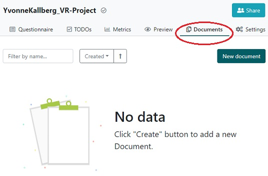
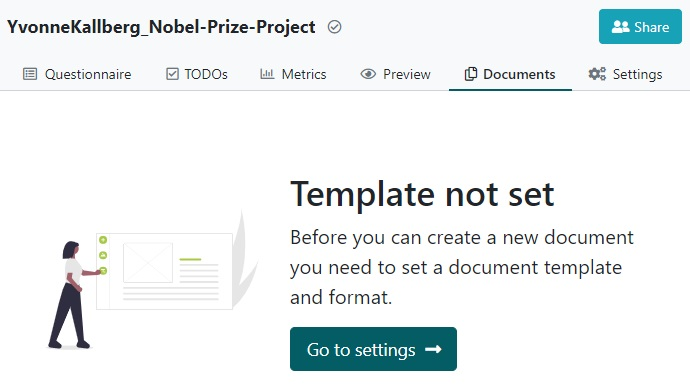
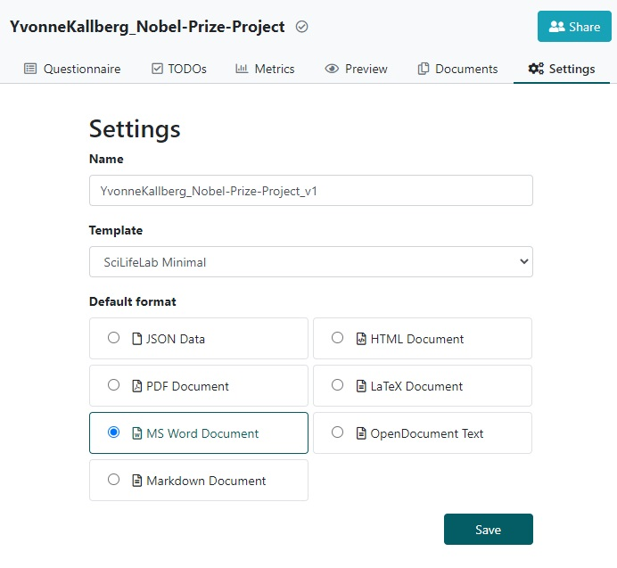

When the Questionnaire is completed, you can create a Data Management Plan file
(a.k.a. a Document)
First, click on Documents in the top navigation bar.

Click on New document, and on the next page click on Go to settings

The Name field is prefilled with the name of the questionnaire, but we recommend
to add an identifier to give this version of the DMP a unique name (eg a number,
the project phase, funder, date, etc).

Next, select a template (has directions on what to include in the DMP),
there are currently three types of templates:
Click on New document, inspect the name, template and file format, then click on
Create.
In order to download the document, click on the three vertical dots right-most to the name of the
document and select Download in the appearing menu.